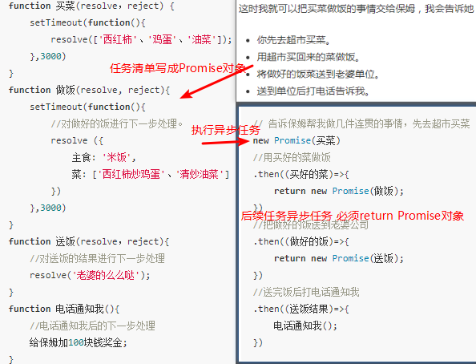
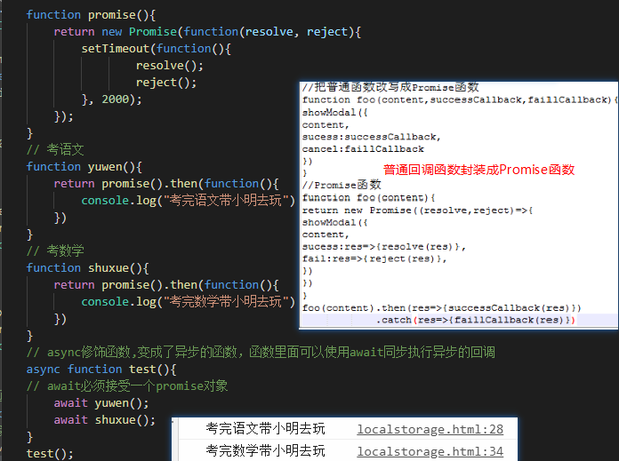

Promise，是一个容器，里面保存着某个未来才会结束的事件（通常是一个异步操作）的结果。从语法上说，Promise是一个构造函数对象，从它可以获取异步操作的消息，自身有all、reject、resolve方法，原型上有then、catch方法。
Promise构造函数接受一个函数作为参数，该函数的两个参数分别是resolve和reject。它们是两个函数，由JavaScript引擎提供，不用自己部署。
resolve函数的作用，将Promise对象的状态从“未完成”变为“成功”（即从 pending 变为resolved），在异步操作成功时调用，并将异步操作的结果作为参数传递出去。
reject函数的作用，将Promise对象的状态从“未完成”变为“失败”（即从 pending 变为rejected），在异步操作失败时调用，并将异步操作报出的错误作为参数传递出去。
Promise实例生成以后，可以用then方法分别指定resolved状态和rejected状态的回调函数。then链式操作简化层层回调的写法，Promise精髓是状态，用维护状态、传递状态的方式来使得回调函数能够及时调用，状态改变就触发then方法指定的回调函数。
普通回调函数function timeout1(ms,calliack){setTimeout(calliack,ms)}
timeout1(1000,function(){console.log('done1') }) //done1
Promise函数function timeout2(ms){return new Promise(function(resolve reject){setTimeout(resolve,ms);});}
timeout2(1000).then(function(){ console.log("done3")}) //done2
timeout方法返回一个Promise实例，表示一段时间以后才会发生的结果，过了指定的时间（ms参数）以后，Promise实例的状态变为Resolved，就会触发then方法调用指定的回调函数。
